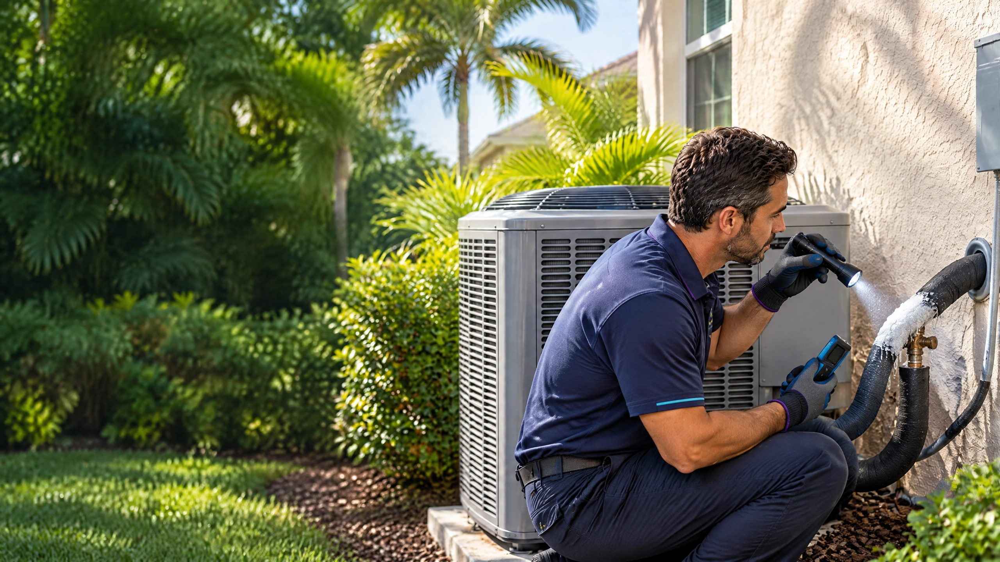

Direct Answer
Ice on an AC line usually means the indoor evaporator coil became cold enough for moisture to freeze. Restricted airflow, a dirty filter or coil, blower trouble, refrigerant problems, and control issues can all contribute. Turn cooling off, contain meltwater, check the accessible filter and open vents, then request service if freezing returns.

A white coating on the larger insulated copper line outside often begins with a condition at the indoor evaporator coil. The refrigerant line can carry that low-temperature condition toward the outdoor unit, making the ice visible even though the source is inside.
Do not assume the system only needs refrigerant. A focused AC repair evaluation should separate airflow restrictions from refrigerant, coil, blower, and control problems before any repair is recommended.
What the Ice Means
During normal cooling, indoor air moves across the evaporator coil. Refrigerant inside the coil absorbs heat, and moisture from humid air can condense on the coil and drain away. If the coil surface becomes too cold, that moisture can freeze instead.
Carrier identifies restricted airflow, blocked vents, filter problems, refrigerant issues, coil buildup, and fan trouble among the conditions associated with frozen coils.[1] Ice can then restrict airflow further, so the condition may grow even while the system continues to run.
ENERGY STAR includes filters, evaporator coils, refrigerant level, blower components, controls, and the condensate drain in a typical cooling-system maintenance review.[2] Routine AC maintenance can address many of those checkpoints, but a currently frozen system still needs diagnosis because the ice itself does not identify one failed part.
What to Do When You See Ice
- Turn the cooling mode off. Stop asking the system to cool so it no longer adds ice. Do not repeatedly reset the thermostat and restart the equipment.
- Prepare for meltwater. Move belongings away from the air handler or nearby drain area. Use a container or towels only where you can do so without opening the cabinet or touching electrical parts.
- Check the accessible air filter. A visibly loaded filter can restrict airflow. Replace it with the correct size and type if it is due, but do not assume that completes the repair. On The Way also provides air filter replacement when the filter setup needs attention.
- Open supply registers and clear return grilles. Furniture, rugs, boxes, or closed registers can reduce airflow. See why closing AC vents in unused rooms can backfire. Do not reach into ducts or remove equipment panels.
- Let the ice melt naturally. Do not chip it, bend the line, pour hot water on it, or apply concentrated heat. Wait until visible ice is gone before considering a restart.
Ice is not a refrigerant diagnosis
A low charge caused by a leak can contribute to freezing, but so can airflow and mechanical problems. Adding refrigerant without identifying the measured condition can leave the cause unresolved.
Common Causes a Technician May Evaluate
| Area | What can contribute | What diagnosis may include |
|---|---|---|
| Filter and return air | Loaded filter, blocked return, incorrect filter setup | Filter condition, return path, pressure and airflow observations |
| Supply airflow | Closed registers, restrictions, damaged or disconnected ducts | Register position, duct condition, delivered airflow |
| Evaporator coil | Dirt accumulation, damage, or an already iced surface | Coil inspection after thawing and appropriate evaporator coil cleaning scope if buildup is confirmed |
| Indoor blower | Motor, wheel, control, speed, or power problem | Blower operation, electrical readings, wheel condition, and airflow |
| Refrigerant circuit | Leak, incorrect charge, metering-device issue, or another circuit condition | Temperature and pressure measurements, leak evaluation, and equipment-specific charging procedure |
| Controls and operation | Thermostat command, relay, sensor, or operating pattern | Sequence of operation and control response |
If the indoor blower does not operate correctly, the reduced air movement can allow the coil temperature to fall too far. A measured finding may lead to AC blower motor replacement, but the motor should not be condemned from ice alone.
Why Low Refrigerant Is Only One Possibility
A refrigerant leak or incorrect charge can alter the pressure and temperature inside the evaporator coil. That condition may contribute to icing, but the line cannot be evaluated accurately while heavy ice is masking normal operation.
Refrigerant work is not a homeowner step. The U.S. Environmental Protection Agency requires applicable Section 608 certification for technicians who attach gauges, add or remove refrigerant, or otherwise open the refrigerant circuit.[3] If measurements identify a refrigerant condition, the repair plan should address the cause and explain any proposed AC refrigerant service.
Ask what readings support the diagnosis. The answer may include coil temperatures, system pressures, superheat or subcooling where applicable, airflow observations, and leak-testing results. The exact method depends on the equipment and metering device.
What to Observe Before the Service Visit
- Where the ice appeared: Note whether it was on the outdoor insulated line, indoor cabinet, coil area, or several locations.
- Airflow: Note whether airflow became weak at all registers or only in part of the home.
- Filter condition: Record the size, type, installation date if known, and whether it was visibly loaded.
- Thermostat behavior: Note the set temperature, fan mode, and whether the system ran continuously or cycled unusually.
- Water after thawing: Note whether water stayed within the drain path or appeared around the cabinet, ceiling, or flooring.
- Repeat history: Tell the technician whether this is the first occurrence or a recurring condition.
These observations do not replace measurements, but they help establish what happened before the system thawed.
When to Request AC Repair
Request service if the system freezes again after a complete thaw and an accessible filter check, if airflow remains weak, if the blower does not run, if water escapes the normal drain area, or if the system does not resume normal cooling.
The broader guide to an AC that runs but does not cool can help separate icing from other symptoms. If the home also feels clammy between cycles, review the distinct causes in why a Tampa home can feel humid with the AC running.
On The Way Heating & Air is local and family-rooted. Dustin Miller began working in HVAC with his father in 2006 and has helped build several service companies. The goal is to identify why the coil froze, explain the measured condition, and recommend the repair that addresses that cause.
Frequently Asked Questions
Does ice on an AC line always mean low refrigerant?
No. Low refrigerant can contribute, but restricted airflow, a dirty filter or evaporator coil, blower trouble, closed or blocked vents, and control problems can also allow the indoor coil and larger refrigerant line to freeze. Diagnosis should use measurements rather than the ice alone.
Should I keep the AC running when the line is frozen?
No. Turn the cooling mode off so the system stops adding ice. Keep water away from belongings as the ice melts, check the accessible filter and vents, and do not restart cooling until the ice has completely thawed. Request service if the condition returns.
Can I remove the ice with hot water or a heat gun?
Do not apply concentrated heat, chip the ice, or bend the refrigerant line. Let the ice melt naturally. Forced thawing can damage insulation, tubing, the coil, or nearby components and does not correct the underlying cause.
Why does water appear after the AC ice melts?
The ice becomes liquid as it thaws. Some water should reach the condensate pan and drain, but heavy ice can create more water than the normal path handles at once. Protect nearby belongings and request service if water escapes the cabinet or drain area.
Sources
- Carrier: Will Frozen AC Fix Itself? A Guide to Frozen AC Coils
- ENERGY STAR: Heating and Cooling Maintenance Checklist
- U.S. Environmental Protection Agency: Section 608 Technician Certification Requirements
Reviewed by a Local HVAC Owner
Dustin Miller, Owner of On The Way Heating & Air. Dustin began working in HVAC with his father in 2006 and has helped build several service companies. This article provides general homeowner guidance; the cause of visible ice depends on airflow, coil condition, blower operation, refrigerant performance, controls, and measurements from the specific system.